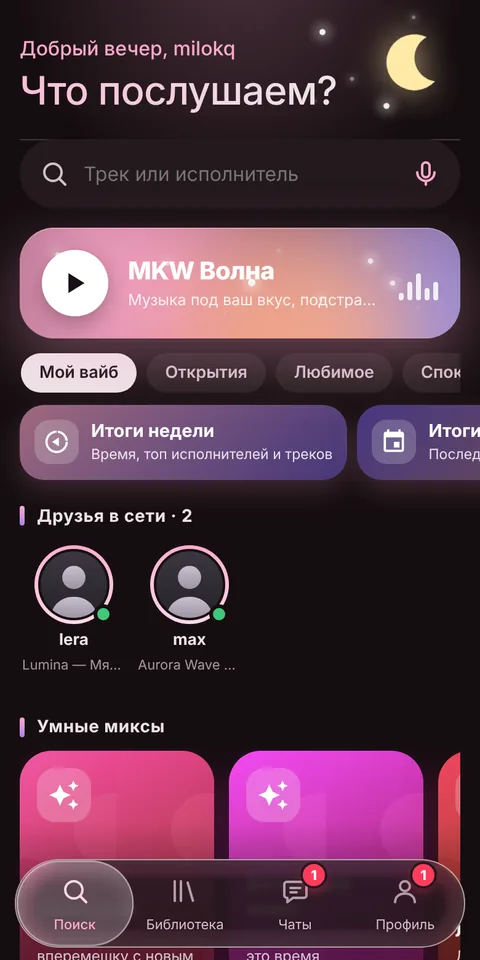
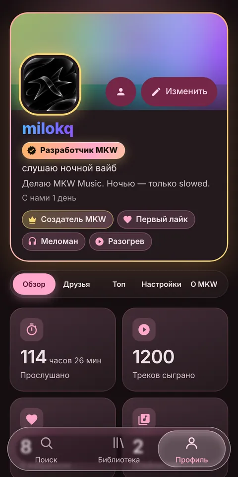
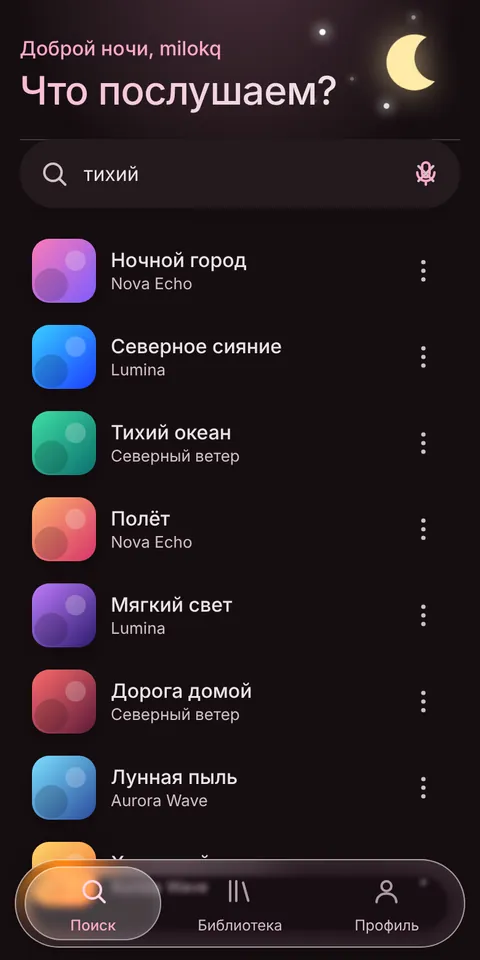
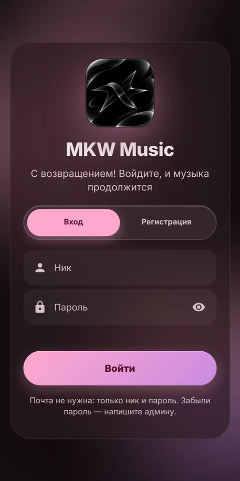

MKW Music — музыка, которая подстраивается под вас
Бесплатный музыкальный плеер для телефона и компьютера. Бесконечная MKW Волна подбирает треки под ваш вкус, а переключать музыку можно жестом руки, не касаясь экрана.

Что такое MKW Music
MKW Music — название сервиса, MiloKwel — его создатель: он делает все обновления и разработку. Это музыкальный веб-плеер, который открывается в браузере и устанавливается на телефон или компьютер как обычное приложение. Музыка ищется через iTunes, YouTube и Audius, а оформление сделано в стиле Material You с эффектом «жидкого стекла».
MKW Волна
Бесконечный поток музыки под ваш вкус. Учится на лайках, истории, пропусках и дослушиваниях.
Управление жестами
Следующий трек, предыдущий, лайк, дизлайк, пауза и продолжение — жестом перед камерой.
Поиск везде
iTunes, YouTube, Audius и поиск по ссылке. Источник выбирается в Профиле.
Темы и цвет
Авто, светлая, тёмная и полностью чёрная тема. Акцент — любой цвет на выбор.
Библиотека
Лайки, плейлисты и история прослушивания. Всё синхронизируется с вашим аккаунтом.
Поделиться треком
Ссылка на песню: друг открывает её и сразу слушает.
MKW Волна
Нажмите одну кнопку, и музыка не закончится. Волна — это не случайный плейлист, она подстраивается на лету.
- Учитывает вкус: лайки, недавние прослушивания и любимые жанры.
- Реагирует на вас: пропустили трек — исполнитель теряет вес, дослушали — получает.
- Открывает новое: добавляет исполнителей из любимых жанров, которых вы ещё не слушали.
- Не повторяется: не ставит одного артиста подряд и не возвращает недавнее.
- Дизлайк 👎 есть у любого трека — такой трек и похожие реже попадаются.

Управление жестами
Руки заняты или грязные? Покажите жест камере. Включается в Профиле, только с вашего согласия, и по умолчанию выключено.
Картинка с камеры обрабатывается прямо на вашем устройстве, никуда не передаётся и не сохраняется. Функция в бета-версии: нужна включённая камера и открытая вкладка.

Поиск и плеер
Ищите по названию, исполнителю или вставьте ссылку на трек. Рекомендации «Для вас» строятся из ваших лайков и истории.
- Источники на выбор: везде, только iTunes, только YouTube или только Audius.
- Страница исполнителя с его треками.
- Полноэкранный плеер: перемотка, очередь, повтор, перемешивание, таймер сна.
- Свайп: плеер раскрывается и сворачивается движением пальца.

Дизайн: Material You и жидкое стекло
Нижнее меню — стеклянное: подсветка следует за пальцем. Вкладки библиотеки работают так же. Тёмная тема и полностью чёрная тема экономят заряд на OLED-экранах.

Как установить
- Android и компьютер (Chrome, Edge): откройте mkwmusic.ru и нажмите «Установить приложение».
- iPhone: в Safari нажмите «Поделиться» → «На экран Домой».
- Регистрация: придумайте ник и пароль, почта не нужна.

Вопросы и ответы
Что такое MKW Music?
Бесплатный музыкальный плеер, который работает в браузере и ставится на телефон или компьютер как приложение. Главное в нём — бесконечная MKW Волна, управление жестами, поиск по нескольким источникам и красивое оформление.
Кто создатель MKW Music?
MKW Music — название сервиса. Создатель MiloKwel делает все обновления и разработку.
Что такое MKW Волна?
Бесконечный поток музыки, который подстраивается под ваш вкус: учитывает лайки и историю, реагирует на пропуски и дослушивания, открывает новых исполнителей из любимых жанров.
Как работают жесты и безопасно ли это?
Включаются в Профиле после вашего согласия. Камера работает на вашем устройстве, изображение никуда не передаётся и не сохраняется.
Нужна ли почта?
Нет, достаточно ника и пароля.
Откуда берётся музыка?
Поиск идёт через iTunes (30-секундные фрагменты), YouTube (официальный встроенный плеер) и Audius. MKW Music не хранит музыку у себя.
Это бесплатно?
Да, пользоваться MKW Music можно бесплатно.
Создатель — MiloKwel
MKW Music — личный проект: все обновления и разработку делает MiloKwel. Исходный код и новости — на GitHub.